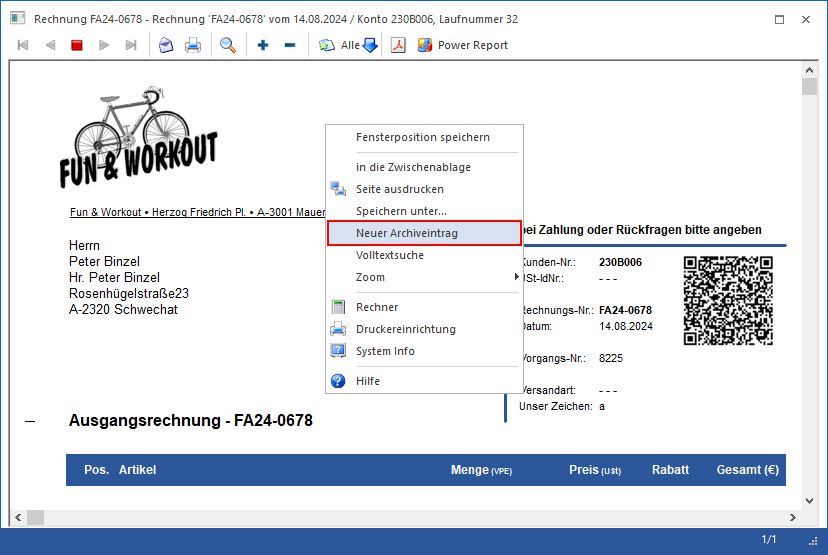

Immer, wenn in der WinLine eine Druckvorschau ausgegeben wird, kann mit Hilfe der rechten Maustaste eine Archivierung angestoßen werden.

Ø Neuer Archiveintrag
Mit dieser Funktion wird die Vorschau in das Archiv verschoben. Nachdem der Eintrag erfolgreich archiviert worden ist, wird das Fenster "Dokumenten-Beschlagwortung" geöffnet, in dem die Beschlagwortung hinterlegt werden kann.